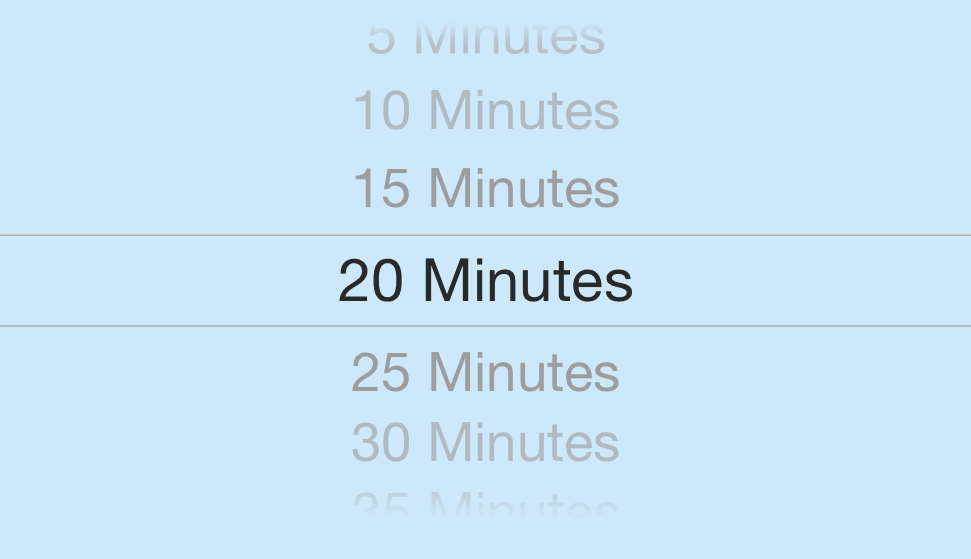
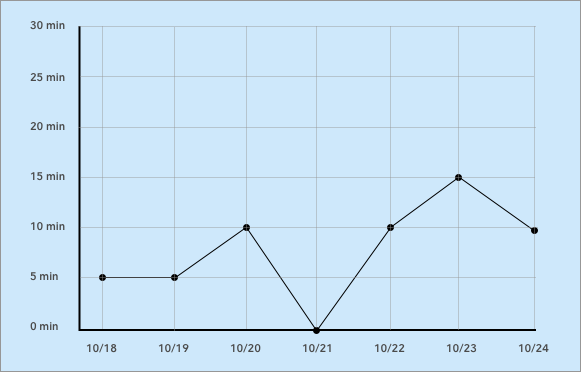

Sit
The idea for ‘Sit’ arose after noticing a lack of simple, free, mobile-friendly, web-based mindfulness meditation timing apps designed with user experience in mind. Those that do exist tend to be dated in aesthetic, and ultiately less appealing to the average user.
My intention was to fill this gap with a tool that was neutral in tone and navigable for users of all backgrounds.
User Research
A survey of local meditators in the Nashville community indicated a strong preference for simplicity and mobility in a meditation tool. Many felt that the paid, subscription based nature of many popular meditation apps was a barrier to use. Others indicated overwhelmed by the breadth of courses, interviews, notifications and other distractions available in these apps. That said, many expressed interest in a tool that could track a user’s personal progress over time. Emphasis on a web-based tool, as opposed to a downloadable app, struck a positive chord with those surveyed.
Some non-meditators I spoke with reported a subtle aversion to the practice generally, citing “new age” associations.
With these concerns in mind, I was able to more clearly articulate the challenge ahead:
How could I offer a simple, functional, web-based meditation timing tool that allowed users of all backgrounds to track their progress over time?
Future Versions
‘Sit’ is very much a work in progress. Future versions will benefit from updated usability tools and enhanced flexibility of timing options.
The sliders on the main page could be reconfigured into pickers (scrollable wheels). This would give the user a broader range of options to choose from. In its current form, the number of options is fixed. The sliders are also generally less responsive on touch-screen devices.

The progress tracking page would benefit from a visual representation of the user’s data, perhaps as a linear graph. This way total progress could be gauged in a single glance. The current ’list’ format is workable, but cumbersome.

Additionally, the ‘Back’ button should remain in view at all times. Currently it scrolls out of view when the number of data entries exceeds the size of the screen.